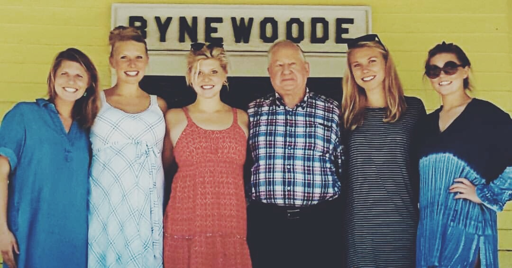

I was born in Fayetteville, Arkansas, when I was about four years old my whole family moved to Maine! I am the youngest of eight kids! I love to travel, ski and go to the beach! My favorite sport is Lacrosse, I have been playing for 11 years, and I even referee the younger teams. In high school, I was captain of the volleyball and lacrosse team! I enjoy learning and going to school very much! I have taken multiple business classes at the Biddeford Regional Center of Technology and loved every minute of my accounting class. In high school, I was the treasurer for the Interact club, which was about volunteering and helping the community. My favorite project was painting dog houses for the animal shelter as well as when we collected shoe boxes filled with presents for others for Christmas.
